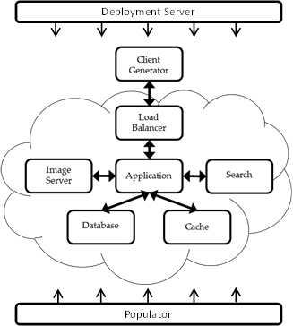

C-MART overview
C-MART is a benchmark designed to allow large scale testing
with a modern web application. It is useful to not only
benchmark server performance, but also test modern datacenter
management algorithms such as dynamic scaling, quality of
service, fault tolerance and load balancing algorithms.
C-MART contains multiple components that are comment in
current commercial websites, such as the ability to use a
scalable and distributed database for data storage, and a
search engine to help users find information. It also contains
a deployment server to allow C-MART to be easily deployed and
dynamically scaled throughout experimentation.
